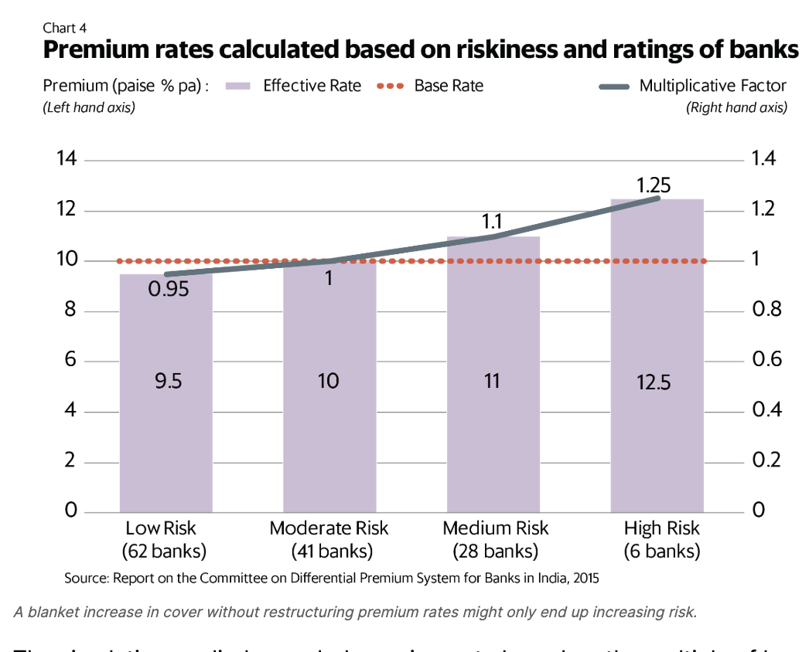
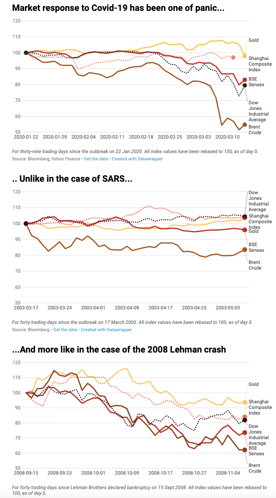
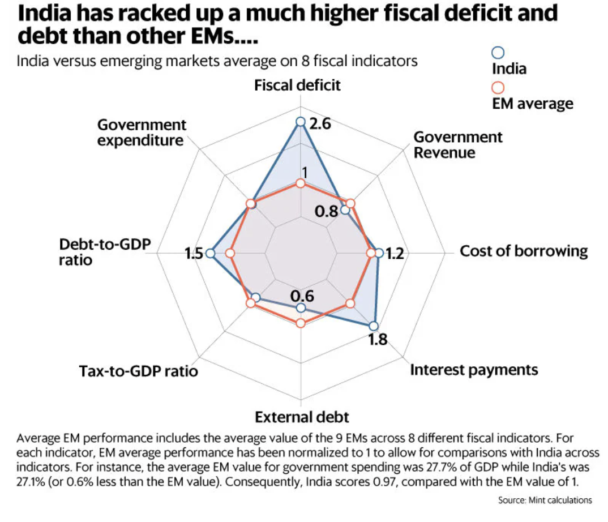
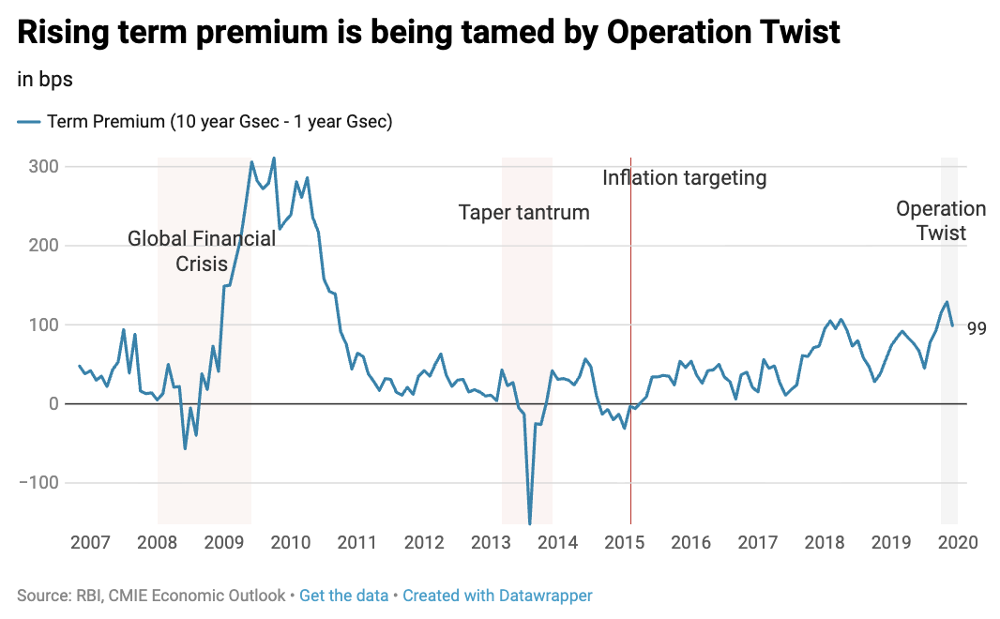
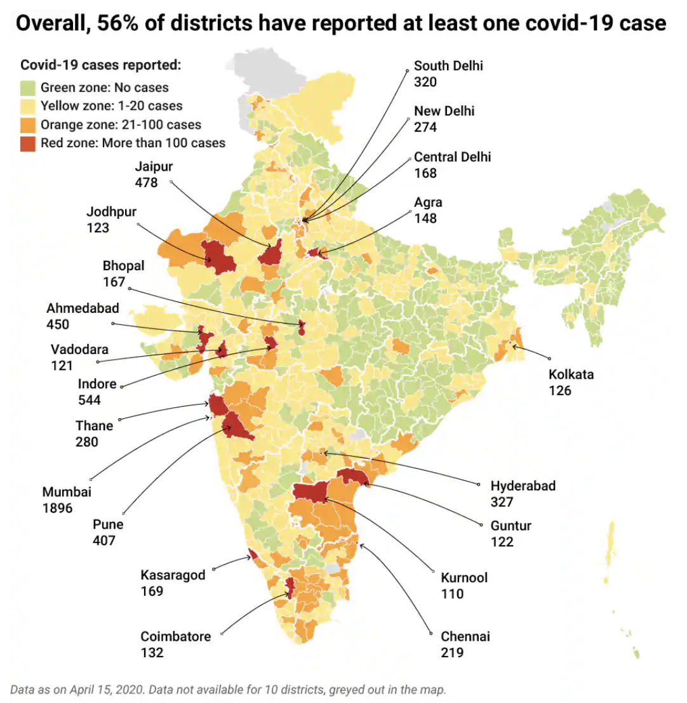
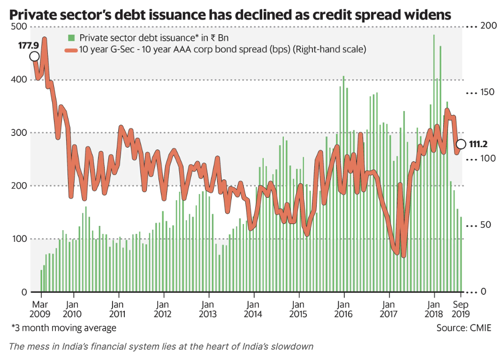

Source: Reviving Arkavathi, WWF-India
Tool: QGIS, Svelte, Adobe Illustrator, Figma
Dataset: Global Land Cover and Land Use Change, 2000-2020 (GLAD), OpenStreetMaps
Tool: QGIS, Svelte, Figma
Dataset: WWF research, OpenStreetMaps
Dataset: Google Earth/Maxar Technologies
Tool: Adobe Illustrator
Dataset: Central Ground Water Board

Source: Rethinking insurance on deposits (Mint)
Tool: Datawrapper
Dataset: Deposit Insurance and Credit Guarantee Corporation (DICGC)

Source: The economic impact of coronavirus and the response so far, in nine charts (Mint)
Dataset: Bloomberg, Yahoo Finance
Source: #30DayMapChallenge
Tool: QGIS
Dataset: Shuttle Radar Topography Mission (SRTM)
Tool: R
Dataset: National Power Portal, Central Electricity Authority
Source: Climate action needs more women on board, Festival De Datos
Tool: Tableau, R Markdown
Dataset: World Economic Forum, Notre Dame University
Dataset: ILO, FAO (accessed via Our World in Data)
Dataset: UNFCCC

Source: India's fiscal performance, in nine charts (Mint)
Dataset: IMF, World Bank, Bloomberg

Source: What India's bond market fears (Mint)
Dataset: RBI, CMIE Economic Outlook
Dataset: CarbonBrief
Source: State Economy Tracker (Mint)
Dataset: Centre for Monitoring Indian Economy (CMIE)
Source: Deeper and Deeper: India's Water Race to the Bottom
Tool: Maplibre
Dataset: Aqueduct Water Risk Atlas
Source: Thibi and Earth Journalism Network, Environmental Data Journalism Academy
Dataset: AQUASTAT Dissemination System, FAO
Tool: Sankeymatic
Dataset: Niti Aayog

Source: Mapped: The spread of coronavirus across India's districts (Mint)
Dataset: How India Lives

Source: The great Indian credit squeeze, in six charts (Mint)
Dataset: CMIE